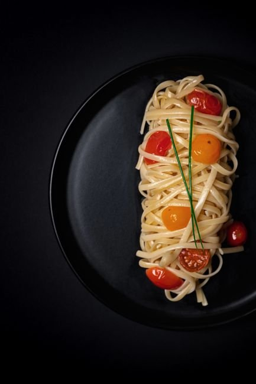
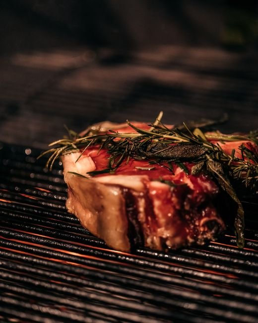

La Experiencia Puny
Pasión por la Pasta Fresca & Fuegos Premium

Pasta Artesanal Hecha en Casa
Cada día elaboramos de forma artesanal nuestros spaghettoni, cavatelli, ravioli y ñoquis, honrando las recetas tradicionales con los mejores insumos importados y locales.

Cortes Selectos a la Parrilla
Ojo de bife, entraña, matambrito de cerdo y costillas braseadas en su punto perfecto de cocción.

Cava & Malbecs De Autor
Selección impecable de etiquetas nacionales y maridajes diseñados para realzar cada plato.